Explore Athens
A Brief History
Athens has been inhabited for millennia, with the Acropolis bearing temples such as the Parthenon, built in the 5th century BCE under Pericles. The city served as a cultural center in antiquity and later under Roman, Byzantine, and Ottoman rule. It became the capital of independent Greece in 1834. Neoclassical quarters expanded in the 19th century. The Acropolis and its slopes are inscribed as a UNESCO World Heritage site.
Attractions Map
Top Sights & Activities
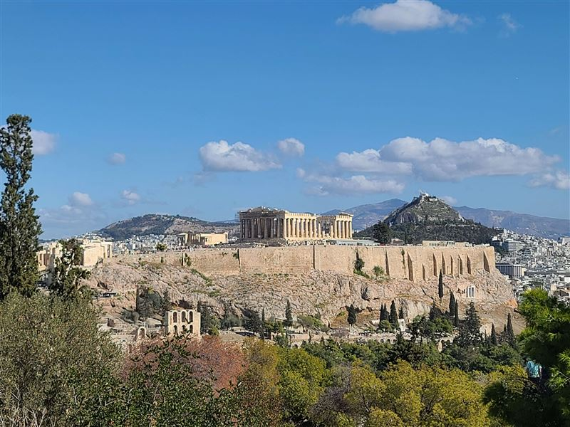
Acropolis of Athens
A rocky citadel above Athens holds the Parthenon, Erechtheion, Propylaea, and Temple of Athena Nike. Major construction under Pericles in the 5th century BC defined classical Greek architecture. Ongoing conservation addresses pollution damage and structural stress on the marble temples.
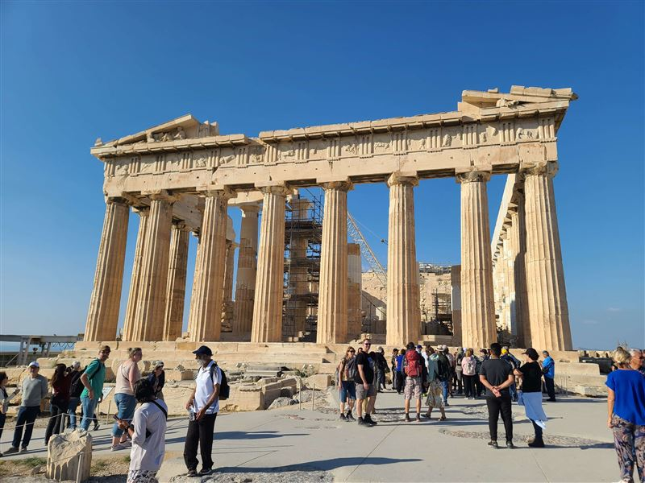
Parthenon
Dedicated to Athena Parthenos, this Doric temple on the Acropolis was completed around 438 BC under architects Ictinus and Callicrates. Phidias oversaw its sculptural program, including the lost gold-and-ivory statue of the goddess. Its colonnades and friezes remain a reference point for classical architecture.
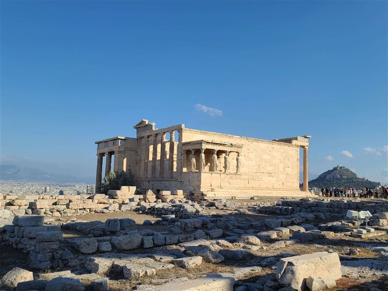
Erechtheion
This Ionic temple on the Acropolis north slope honored Athena Polias and Poseidon-Erechtheus. Built between 421 and 406 BC, it incorporates several shrines on uneven ground. Six draped female figures, the Caryatids, support its south porch; five originals are displayed in the Acropolis Museum.
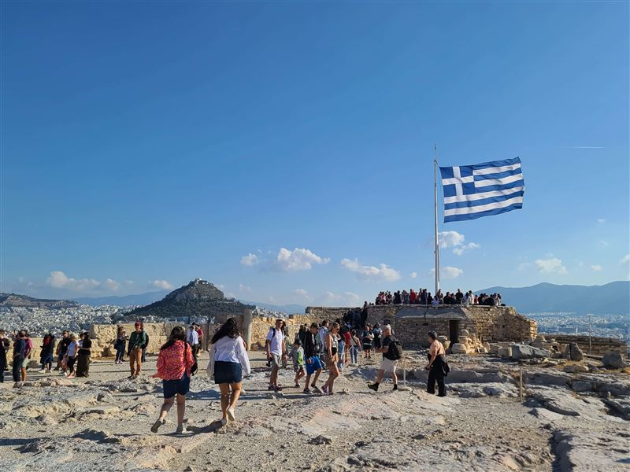
Greek Flag of Athens Acropolis
A flagpole near the Acropolis entrance flies the Greek flag in daily ceremonies performed by Evzones. On 30 May 1941, Manolis Glezos and Apostolos Santas climbed here at night and removed the Nazi swastika banner, an act of resistance remembered as a symbol of wartime defiance in occupied Athens.
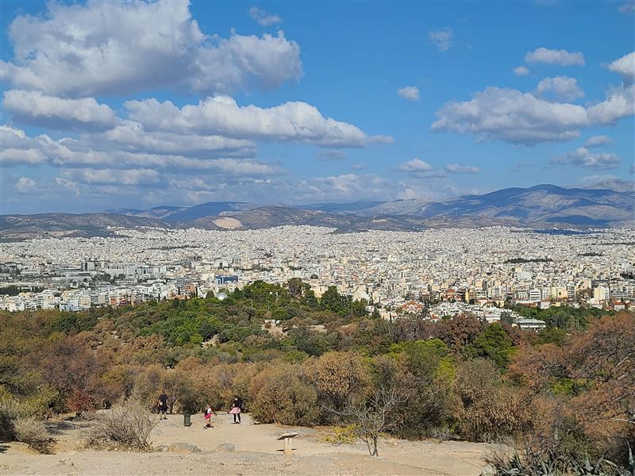
Philopappos Hill
Also called the Hill of the Muses, this pine-covered rise southwest of the Acropolis holds the Philopappos Monument, a 2nd-century AD mausoleum for a Roman senator of Commagene. Footpaths lead to viewpoints over the Parthenon, Agora, and port of Piraeus.
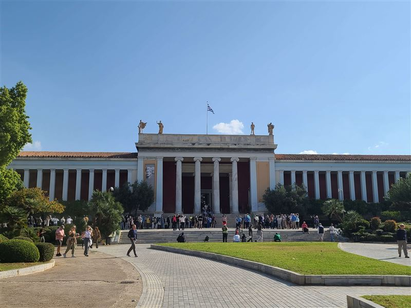
National Archaeological Museum
Founded in 1829, Greece's national archaeological museum displays finds from excavations across the country, from Neolithic figurines to Roman bronzes. Highlights include Mycenaean gold masks, the Antikythera mechanism, and frescoes from Thera. The neoclassical building stands in the Exarchia district north of the center.
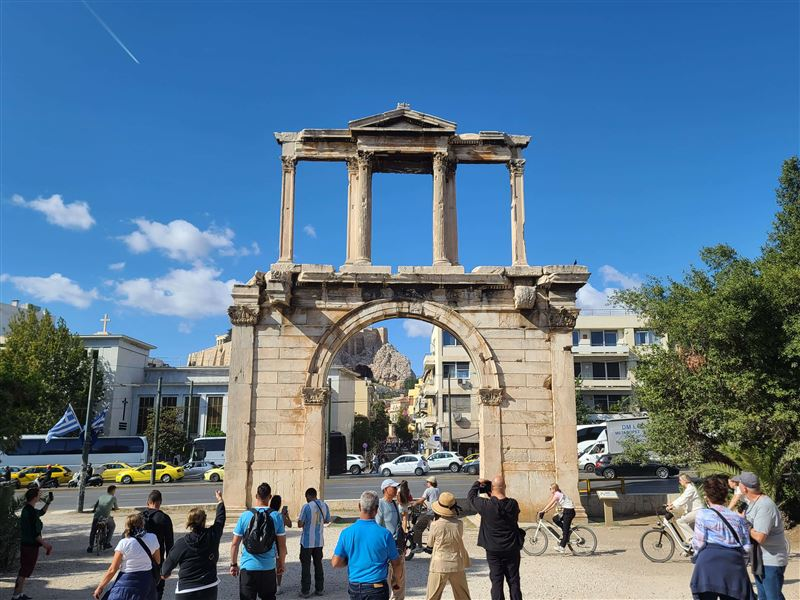
Arch of Hadrian
Hadrian dedicated this marble arch in 131–132 AD to mark the boundary between old Athens and his new quarter. Inscriptions on opposite sides address Theseus and Hadrian as founders. The structure stands east of the Temple of Olympian Zeus along a Roman processional route.
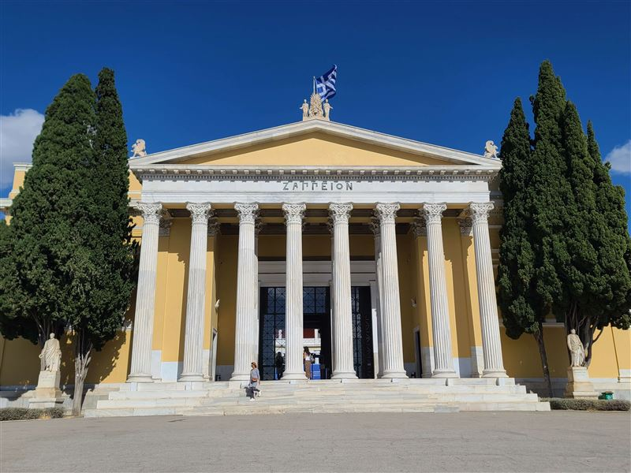
Zappeion
Funded by benefactor Evangelos Zappas, this neoclassical hall in the National Gardens was completed in the 1880s for exhibitions linked to the Olympic revival movement. It hosted fencing during the 1896 Games and continues to serve conferences and cultural events beside the parliament building.
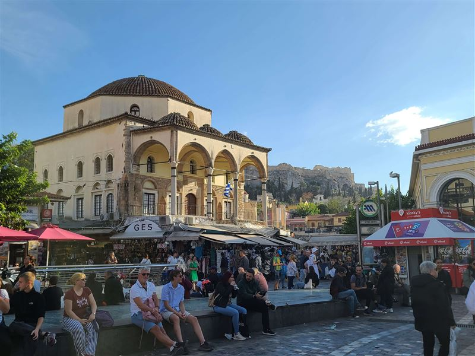
Monastiraki Square
This busy square at the foot of the Acropolis takes its name from a former monastery church. Flea markets, souvenir stalls, and cafes fill the lanes around the Ottoman-era Tzistarakis Mosque and restored Hadrian's Library. Metro and suburban rail lines meet here, linking the center to the airport and port.
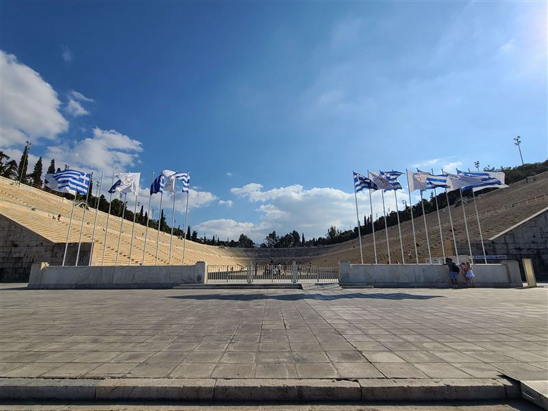
Panathenaic Stadium
Rebuilt in Pentelic marble on the site of an ancient racecourse, this horseshoe stadium hosted the 1896 Olympic opening and closing ceremonies. With a capacity near 45,000, it remains open for tours and occasional concerts. A bronze statue of Discobolus stands near the entrance on Ardettos Hill.
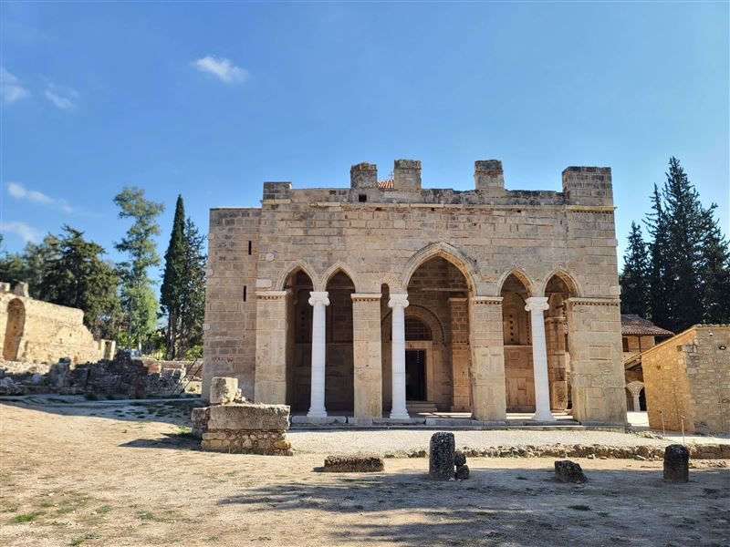
Daphni Monastery
This 11th-century monastery northwest of Athens replaced an earlier sanctuary of Apollo Daphnaios. Its compact cross-in-square church preserves mosaics from the Comnenian period with classical proportions and expressive figures. Earthquake damage led to lengthy conservation work on the dome and apse.